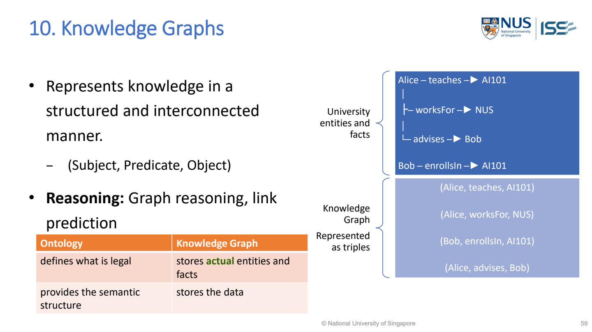

Knowledge graph（知識圖譜） structure and queries
A knowledge graph stores connected facts（事實；推理中已知的資訊） as entities（實體；被描述的對象） and named relationships, often subject（主體；三元組起點）–predicate（謂詞；描述性質或關係）–object（客體；三元組終點） triples（三元組；主體、關係、客體）. Queries exploit those connections.
Relation（關係；對象間的連結） labels（標籤；作比較的正確答案） determine which course query is answered; Bob’s enrollment is not teaching.
Lecture example redrawn · MR-Day 2_JR_v1.pdf · PDF p.58

MR-Day 2_JR_v1.pdf · PDF p.58 / printed slide 59. Original supplied slide, not redrawn.
What to draw / write: Knowledge graphs
(Alice, teaches, AI101) (Alice, worksFor, NUS) (Bob, enrollsIn, AI101) (Alice, advises, Bob)
- Subject
- Starting entity in the triple.
- Predicate
- Named relationship.
- Object
- Destination entity/value.
- Graph form
- Draw Subject ─Predicate→ Object for each triple.
Exam answer: Either list (Subject, Predicate, Object) triples or draw equivalent labelled arrows, as requested. Preserve entity identity and relation direction. An ontology defines types/allowed relationships; these triples store actual facts.
MR-Day 2_JR_v1.pdf · PDF p.58
Lecture entities: follow the right identity
Worked study example: Stored triples include Alice teaches AI101, Alice advises Bob and Bob enrollsIn AI101. Consider questions about Bob and Alice.
| Question | Graph operation | Answer/reasoning（推理） |
|---|---|---|
| Who advises Bob? | Reverse-match advises edge ending at Bob | Alice |
| Which course does Bob enroll in? | Follow Bob→enrollsIn | AI101 |
| Which course does Bob’s adviser teach? | Bob←advises←Alice→teaches | AI101 |
| Does Bob teach AI101? | No matching asserted teaches edge | Not established; enrollment is different |
| What supports the answer? | Return source triples/path | Identity and relation chain can be audited |
What this tells us: Two steps through a shared entity answer a question a flat keyword match can confuse. The missing teaches edge does not establish that Bob never teaches; it establishes that this graph lacks that fact.
How are entities and relations stored as triples?
- A KG（Knowledge Graph） represents facts through entity identities and named directed relations. The representation（表徵；資料的表示方式） is more than a collection of keywords: Alice–advises–Bob and Bob–enrollsIn–AI101 can be joined because the Bob identifier is the same entity in both facts.
- Queries exploit these joins. To answer a relational question, identify the starting entity, the relations to follow and what answer type is required. Keeping relation direction explicit（明確；直接提供的資訊） prevents a query for “courses taught by Bob’s adviser” from returning courses Bob himself teaches.
- The absence of an edge may mean（均值；平均數） unknown, not false. Coverage（涵蓋率；能服務的使用者或項目範圍） and provenance（來源脈絡；資料從哪裡來） therefore matter: a query can be exact over an incomplete graph yet miss a true real-world answer. Predicted links from an embedding（嵌入；用向量表示內容） model must remain distinguishable from validated stored facts, especially in sensitive scenario design.
Implementation steps and their purpose
- Identify entities and stable identifiers.
- Define meaningful relation types and directions.
- Store source-backed triples and relevant（相關性；是否切合問題） attributes（屬性；對象的描述欄位）.
- Translate the question into graph conditions.
- Retrieve（檢索；找出相關資料） matching facts and retain their provenance.
Choose the method from the problem
Use when questions require relationships across entities, rather than only one row’s features（特徵；描述樣本的屬性）.
| Scenario cue | Suitable choice | Why it fits |
|---|---|---|
| Question depends on connected entity relationships | KG query | Shared identifiers support（支持度；同時出現的交易比例） exact joins across facts |
| Question only predicts a label from a feature row | Predictive model may fit better | A KG is not automatically the right tool for every task |
Diagnose: Wrong Bob’s records joined
| What you observe | Why it happens | What to change | Why that helps |
|---|---|---|---|
| Wrong Bob’s records joined | Names used as unique IDs | Use entity IDs/disambiguation | Different people can share a name |
| Confident “no” from empty query | Incomplete graph treated as closed truth | Report not established and assess coverage | Missing relationships are not universal negatives |
Common wrong answers and the exact correction
- A KG is not a decision tree（決策樹；逐條條件作判斷）.
- An absent edge does not prove a relationship is false.
Implement it and test the outcome
Data, components and application
- Duplicate names → entity matching → separate records may refer to one person.
- Missing/incorrect links → validate and record provenance → graph queries are only as reliable as stored facts.
How to evaluate it
Check query answers against known examples, graph coverage and relation direction. Distinguish stored facts from predicted links.
Build the answer in this order
- Extract entity/relation schema（知識結構）.
- Show sample triples.
- Translate query.
- Return answer with supporting path.
An answer you could write
- To find courses taught by Bob’s adviser, I follow Bob backwards through advises to Alice, then Alice through teaches to AI101.
- Bob’s enrollment does not establish that Bob teaches AI101; an absent teaches edge means the graph has no supporting fact, not universal falsity.
Used Cases:
The use-case names come from the lecture. The short scenarios below explain how to recognize them in an exam; they are teaching examples, not quoted exam questions.
| Lecture use case | What it means | Example / clue in a question |
|---|---|---|
| University entities and facts（大學實體與事實） | Connect actual people, courses and their relationships. | The lecture stores Alice teaches AI101, Alice advises Bob and Bob enrollsIn AI101. Follow the relevant links to answer who teaches Bob’s course. |
Choose by the required job: explain what knowledge is stored and how this representation helps with the scenario. A use-case name alone is not a sufficient reason.
MR-Day 2_JR_v1.pdf · PDF p.58 / printed slide 59.